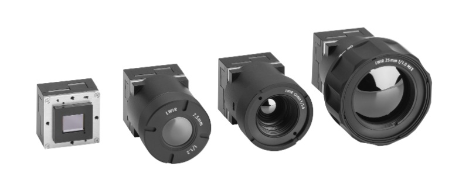

厳選ニュース / 活用トピックス
1.【安全動向】 漏洩事故を防ぐ遠隔監視への移行が加速 (2025年9月25日)
米国や日本国内の重大なガス漏洩事故を受け、作業員を危険エリアに立ち入らせない「カメラ等による遠隔監視体制」を推奨する基準整備が官民で進められています。
なぜ重要か：
- 「点」から「面」の検知へシフト： 風向きに左右される定点センサーと異なり、赤外線画像技術（OGI）でガス雲の漏洩箇所と拡散方向を遠隔から直視できます。
- 二次災害と人的曝露の未然防止： 制御室から漏洩源を即座に特定・遮断できるため、プラントでの重大な事故事態を水際で防ぎます。
2.【規制動向】 メタン排出規制で定置型システムによる「連続監視」へ移行 (2026年4月改訂)
米EPAやEUによるメタン排出削減規則の厳格化に伴い、定期的な手動巡回から、定置型カメラと自動解析を用いた24時間365日の連続監視体制への代替運用が始まっています。
なぜ重要か：
- 定期点検の「見落とし期間」を排除： 自動解析ワークフローにより、間欠的な逃散排出の発生直後にアラートを発報します。
- 規制遵守と製品ロス最小化： 欧米の厳格な環境罰則を回避しつつ、貴重な原料ガスの漏洩損失を抑えて収益性を守ります。
3.【導入動向】 SWIR連続OGIカメラが米EPAの法定代替試験法に承認 (2026年6月)
手動点検を代替する技術として、短波長赤外（SWIR）等を用いた定置型連続監視カメラが、米EPAの石油・天然ガス排出規則における代替試験法として相次ぎ正式承認されています。
なぜ重要か：
- 手動巡回点検と常時監視の両立： 定期的なスクリーニング基準を満たしつつ、連続的なプルーム可視化で現場の巡回工数と危険作業を大幅に削減します。
- 多拠点への一括配備を実現： メンテナンス性に優れた定置型OGIシステムへ移行することで、中規模施設でも現実的なコストで連続監視網を導入できます。
ピックアップ製品・ソリューション
LYNRED「ATIシリーズ」赤外線OGIセンシングモジュール
冷却型MWIR＆非冷却型のラインナップで実現する全天候ガス保安

なぜ重要か：
- 高感度検知と大量配備を1社で完結： 微量ガスを遠隔検知する「冷却型」と、常設監視を低コスト化する「非冷却型」を組み合わせ、最適なOGI網を構築できます。
現場課題への解決アプローチ：
- 微量ガスを即座に可視化： 炭化水素の光吸収帯に特化した冷却モジュール（ATI EOLE MW）により、微小な漏洩も高コントラストで遠隔特定します。
- ドローン搭載に最適なSWaP設計： 冷却型でありながら超小型・軽量・低消費電力を達成し、ドローンの飛行時間への影響を抑えて巡回を自動化します。
- 冷却器不要で長寿命・低コスト： 12µm非冷却マイクロボロメータ（ATI 320/640）を採用し、24時間365日稼働の定置監視カメラに最適化しています。
| 検出方式 / センサー |
非冷却マイクロボロメータ（320/640） / 冷却型MWIR（ATI EOLE MW） |
| 解像度 / 画素ピッチ |
QVGA（320×240） / VGA（640×480） / 12µmピクセルピッチ |
| 感度波長帯 |
LWIR 8〜14µm（非冷却） / MWIR 3〜5µm（冷却モジュール） |
| NETD（温度分解能） |
< 40mK（非冷却モデル） / < 20mK（冷却型 超高感度モデル） |
| オンボード処理機能 |
感度不均一補正（NUC）、自動ゲイン制御（AGC）、不良画素置換内蔵 |
![[ 1,200文字 | 読了時間：約2分 ] | 人的巡回から「常時監視」へ。「赤外線OGI」センシング革命 - 目に見えないガス漏洩をリアルタイム可視化。ドローン×定置型AIでプラント保安を無人化。](ad_image.jpg)